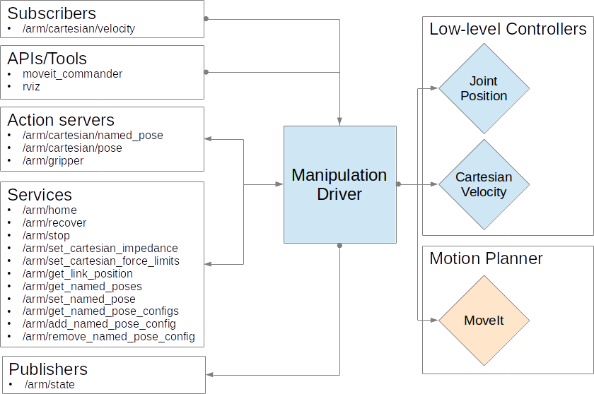

RV Manipulation Driver (RMD)
NOTE: This package defines a generic interface for using a manipulator; it is NOT intended to be run directly. To use the driver with your manipulator, you must use a package that implements the driver for your arm (e.g. "rv_panda_driver")
Overview
The RV Manipulation Driver (RMD) provides a simple unified mechanism for building high-level interface configurations for seamlessly controlling a broad range of manipulators under different actuation modes.
More concretly, RMD provides a mechanism for advertising high-level topics, services and action_servers for controlling a manipulator, which when called, not only actuate the manipulator based on the provided command, but also hot-swaps in the relevant low-level controllers for that actuation mode.
Additionally, RMD also provides a convenient mapping to the MoveIt planning framework, and provides controller switching when it receives MoveGoal requests from MoveIt.
An example configuration of RMD can be seen below:

Setup
RMD configurations are specified using the YAML file format and should be loaded via rosparam into the local namespace of RMD. This configuration defines: 1) a move_group name to be used when generating goals with the MoveIt planner, and 2) a list of controllers representing of one or more controller descriptions. This format can be seen below.
move_group: move_group_name
controllers:
- Controller Description 1
- Controller Description 1
Controller Description
Each controller description is composed of the following fields:
| Field Name | Description | Example |
|---|---|---|
| topic_name | Specifies the topic name to which RMD will subscribe. | "cartesian/velocity" |
| topic_type | The topic type of the subscriber. | "geometry_msgs/Twist" |
| maps (optional) | The topic name that RMD will republish on to communicate with the activated low-level controller. If left unspecified, RMD will switch controllers but not republish the received message. | "/cartesian_velocity_node_controller/cartesian_velocity" |
| controller | The low-level controller required to achieve the actuation mode described by topic_name |
"cartesian_velocity_node_controller" |
| type | Specifies whether to advertise a subscriber, service or action_server | "subscriber" |
Example Configuration
An example configuration for the Franka-Emika Panda can be seen below:
move_group: panda_arm_hand
controllers:
- name: "cartesian/velocity"
topic_type: "geometry_msgs/Twist"
type: "publisher"
controller: "cartesian_velocity_node_controller"
maps: "/cartesian_velocity_node_controller/cartesian_velocity"
- name: "/move_group/goal"
topic_type: "moveit_msgs/MoveGroupActionGoal"
type: "publisher"
controller: "position_joint_trajectory_controller"
Extending RMD
RMD provides basic functionality, but it is often the case that you will need to extend on these capabilities to meet the requirements of a specific manipulator.
For this purpose, RMD provides access to two core interfaces, manipulation_driver and mantipulation_moveit_commander.
For an example of how these modules might be extended, see the rv_panda_driver package. The extension provided in this package provides additional functionality, such as clearing errors on the e-stop being released.
Action API
Out of the box RMD provides access to a simple Pose Control and Named Pose Control API.
Pose Control
-
cartesian/pose/goal (rv_msgs/MoveToPoseGoal) Moves the end-effector to the requested goal pose w.r.t. the base frame.
-
cartesian/pose/cancel (actionlib_msgs/GoalID) Cancels the currently executing goal.
-
cartesian/pose/feedback (rv_msgs/MoveToPoseGoal) Feedback from the currently executing goal.
-
cartesian/pose/status (actionlib_msgs/GoalStatusArray) Status information on goals sent to the driver.
-
cartesian/pose/result (rv_msgs/MoveToPoseGoal) The result of the pose goal request.
Named Pose Control
-
cartesian/named_pose/goal (rv_msgs/MoveToNamedPoseGoal) Moves the end-effector to a pre-defined joint configuration.
-
cartesian/named_pose/cancel (actionlib_msgs/GoalID) Cancels the currently executing goal.
-
cartesian/named_pose/feedback (rv_msgs/MoveToNamedPoseFeedback) Feedback from the currently executing goal.
-
cartesian/named_pose/status (actionlib_msgs/GoalStatusArray) Status information on goals sent to the driver.
-
cartesian/named_pose/result (rv_msgs/MoveToNamedPoseResult) The result of the goal request.